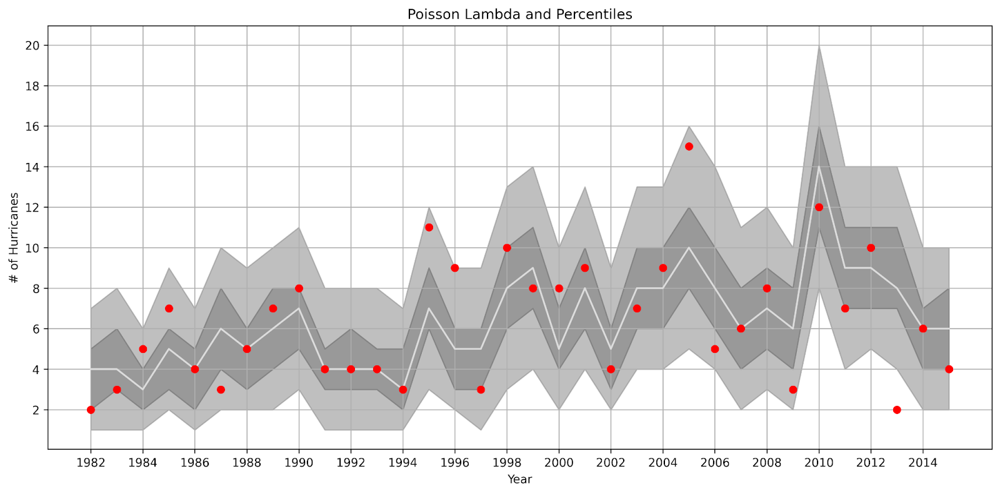
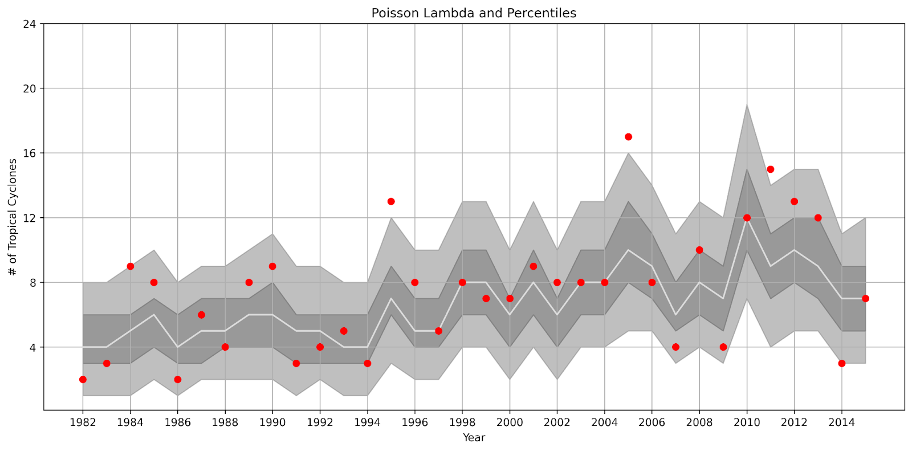
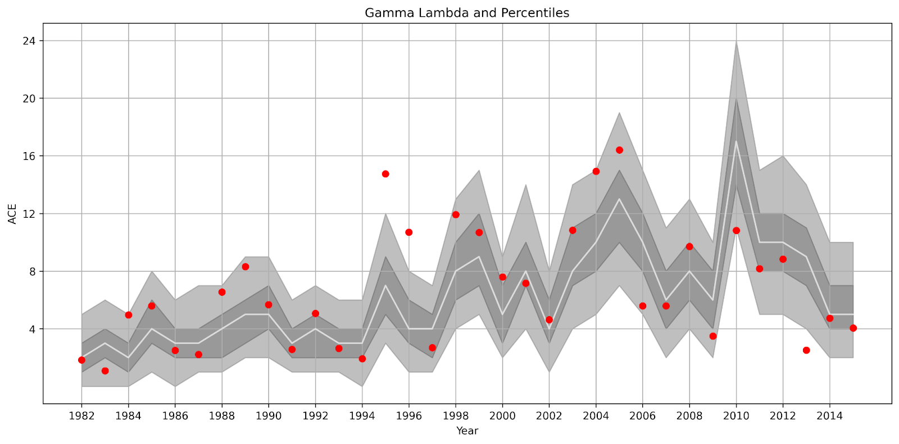
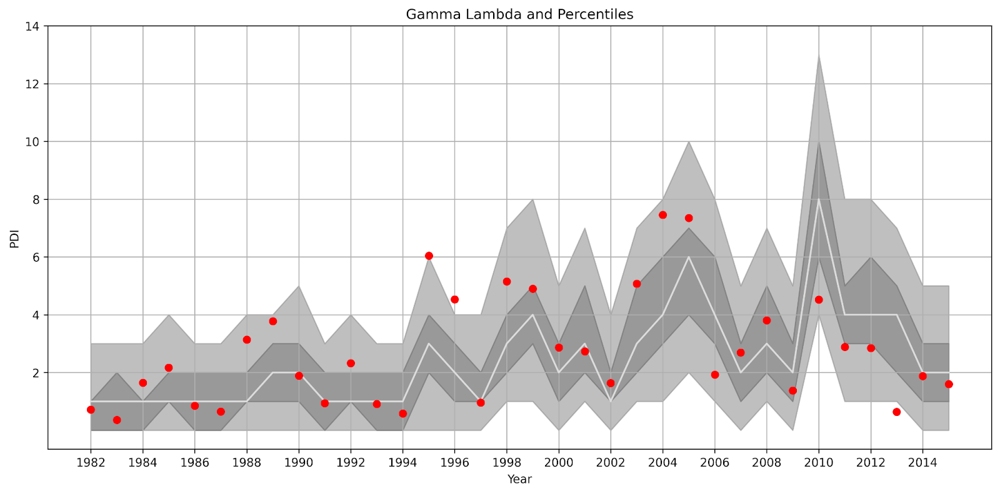

[insert subtitle here]
This dashboard presents key metrics for tropical cyclone activity, including frequency, accumulated cyclone energy (ACE), and power dissipation index (PDI). The visualizations help researchers, meteorologists, and policymakers identify trends in cyclone behavior and intensity over time.
Data sources include [insert data sources here].



